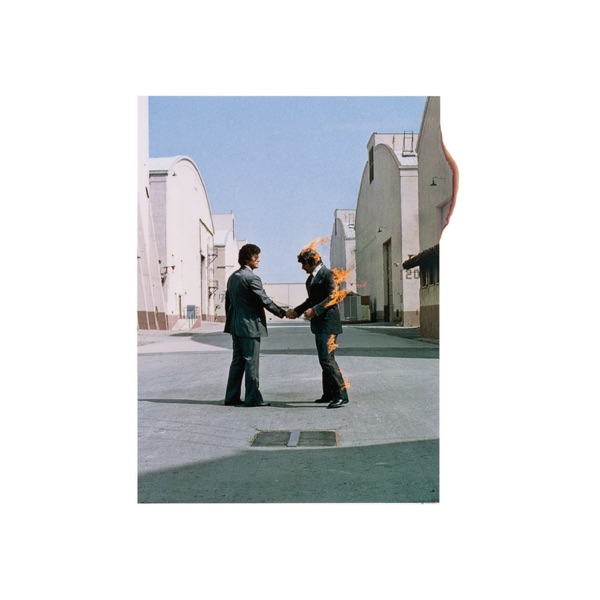

Wish You Were Here
Pink Floyd
Upgrade idea: This is a format collectible, not a listening upgrade path. For high-fidelity listening, see the vinyl pressings or the Analogue Productions SACD (CAPP 528 SA).
- Original release
- 1975
- Pressing year
- 1975
- Country
- US
- Format
- 8-Track Cartridge Album (Dolby)
- Label / Cat#
- Columbia – PCA 33453
- Genres
- Rock
- Styles
- Psychedelic Rock, Prog Rock
- Discogs release
- 4230491
- Discogs master
- 11703
- Apple Music
- Wish You Were Here
- Wikipedia
- Wish You Were Here
Production notes
Tracklist (Discogs)
| A | Shine On You Crazy Diamond: Part I; Part II; Part III | |
| B1 | Shine On You Crazy Diamond: Part IV; Part V | |
| B2 | Welcome To The Machine | |
| B3 | Have A Cigar (Part I) | |
| C1 | Have A Cigar (Conclusion) | |
| C2 | Wish You Were Here | |
| C3 | Shine On You Crazy Diamond: Part VI | |
| D | Shine On You Crazy Diamond: Part VII; Part VIII; Part IX |
Tracklist (Apple Music)
| 1 | Shine On You Crazy Diamond, Pts. 1-5 | 13:34 |
| 2 | Welcome to the Machine | 7:30 |
| 3 | Have a Cigar | 5:07 |
| 4 | Wish You Were Here | 5:38 |
| 5 | Shine On You Crazy Diamond, Pts. 6-9 | 12:25 |
Identifiers
- Other: X798
Notes
Grey 3-pin cartridge shell with 2 piece printed labels. Another very similar 5-pin version also exists.
Printed in U.S.A.
Manufactured by Columbia Records / CBS, Inc.
Made in U.S.A.
© 1975 Pink Floyd Music Limited ℗ 1975 Pink Floyd Music Limited
Notes & discrepancies
- Track count differs: Discogs=8, Apple Music=5
Wish You Were Here is Pink Floyd’s ninth studio album, released in September 1975 on Columbia Records. A meditation on absence, creative compromise, and the fate of former bandmate Syd Barrett — who famously appeared unannounced at the recording sessions, so changed that the band didn’t recognize him — the album is built around the epic “Shine On You Crazy Diamond,” a nine-part suite that bookends the record. Between those bookends sit “Welcome to the Machine,” “Have a Cigar,” and the title track, each a pointed commentary on the music industry and human disconnection.
The 8-track cartridge was one of the dominant home and car audio formats of the mid-1970s, running alongside vinyl as a consumer format before cassette tape ultimately displaced it by the early 1980s. The format uses a continuous loop of tape divided into four stereo “programs,” which creates an inherent challenge for album sequencing — tracks must be divided to fit the program structure, often interrupting songs mid-flow. For Wish You Were Here, “Shine On You Crazy Diamond” is split across programs to accommodate the format’s physical constraints, resulting in 8 listed tracks on the cartridge versus 5 on the vinyl.
This 1975 US original pressing (Columbia / CBS catalog PCA 33453) is a period artifact — a snapshot of how millions of Americans first heard Pink Floyd in their cars and living rooms in 1975. The TC8 designation on the cartridge label is the format identifier for standard stereo 8-track.
About this 1975 US pressing (8-Track Cartridge): Columbia / CBS catalog PCA 33453, original 1975 US 8-track cartridge release. TC8 stereo format.